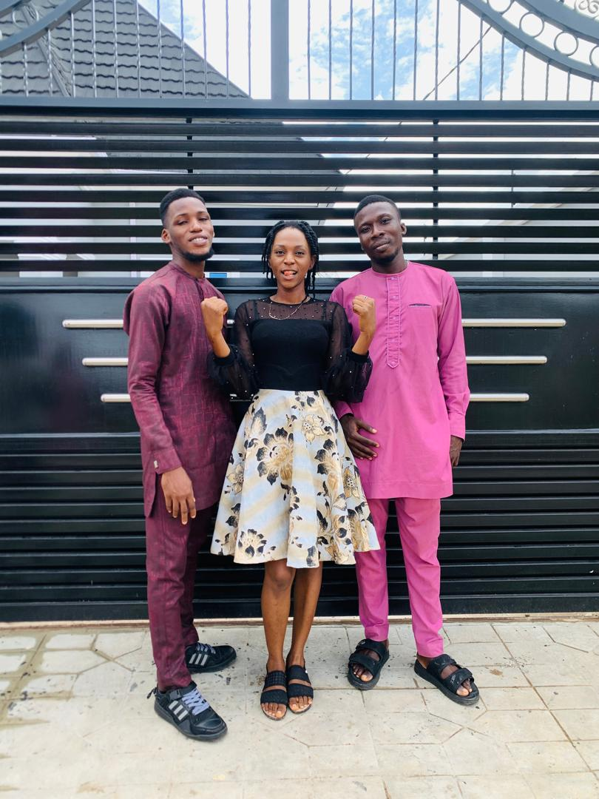
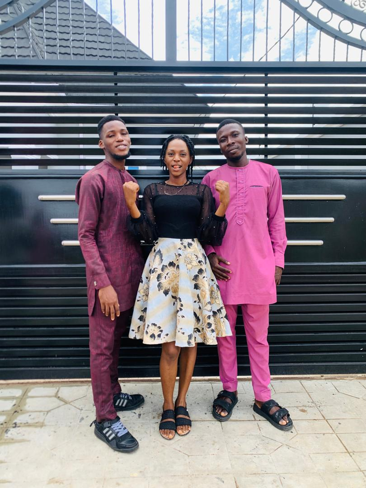

Personal Details
- Address: 2, Bisi Bankole Street, OkeOnitea, Osogbo, Osun State
- Phone: +234 (0) 8121739739/8139718229
- Email: akinyemiwemimo21@gmail.com
- Date of Birth: 21th August, 2000
- Local Government Area: Ibadan North-East
- State of Origin: Oyo
- Sex: Male
- Marital Status: Single
- Nationality: Nigerian
- Religion: Christian
- Languages Spoken: English & Yoruba
Professional Summary
Ambitious, career-focused, jobseeker, anxious to obtain a position to help launch career while achieving institution goals. Willingness to take on added responsibilities to meet team goals. As a recent graduate, I am seeking a role which allows me to continue learning and perfecting my skills as I provide high-quality work, and encourages me to flourish as a Computer Scientist.
Core Competencies
- Flexibility and Adaptability
- Time management
- Interpersonal Skills
- Self-Discipline
- Stress Tolerance
- Strong work ethic
- Positive attitude
Professional Skills
- Excellent communication, writing, training, and management skills
- Superior technical, interpersonal and communication skills
- Excellent communicator who effectively conveys information verbally and in writing
- Computer proficiency in Microsoft Office
- Attention to detail and ability to identify and successfully address unexpected results
- Ability to identify technical, budgetary, and schedule risks to the program and plan appropriate risk response strategies
- Ability to work hand-in-hand with other members to complete projected goals as scheduled
- Committed to professional development, willing, and able to complete special training as required
Interests and Hobbies
- Travelling
- Reading
- Listening to music
- Willingness to try new things
- Programming
- Exploring new insight
Education and Professional Development
Kwara State University, Malete, Kwara state (2018 - 2022)
Bachelor of Science Honors Degree: Computer Science
Command Day Secondary School, Ede, Osun State (2014 - 2016)
SSCE Certificate
Parakletos International School, Osogbo, Osun State (2012 - 2014)
JSSC Certificate
Parakletos International School (2007 - 2012)
Primary leaving School certificate
Relevant Experience
Leadership Experience
Area Welfare Coordinator, Welfare department, RCCG, Graceland Area, Osogbo, Osun State (2023)
Industrial Experience
Parakletos International School, Primary School Teacher (2023)
Beaglo IT Centre (2021 - 2022)
Pet City Veterinary Clinic, Osogbo, Osun State, Volunteer (2020 - 2021)
Research Experience
Natural Language Processing Translation from one Language to Another Using Bilingual Language Translator (2022)
Award and Certification
Bachelor of Science (B.Sc) in Computer Science
Gallery


 

Referees
Mrs. Akinyemi Omoyeme
Founder, Parakletos International School, Osogbo Osun State
Phone: 08033881702
Email: omoyemeakinyemi33@gmail.com
Mr. Oluwasetemi Ojo Stephen
Full Stack Engineer, Talent QL (https://fluna.co)
Phone: +1(8765) -924-904
Email: setemiojo@gmail.com